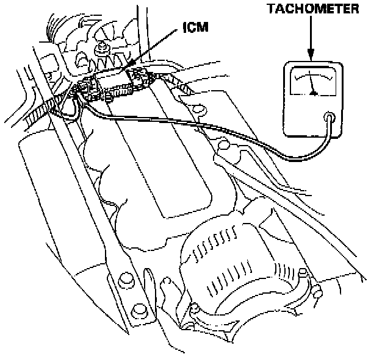
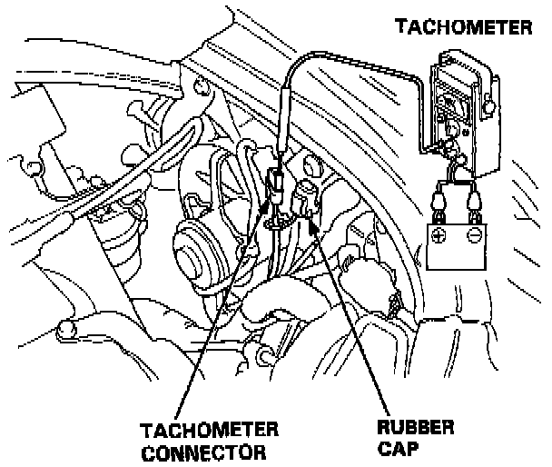
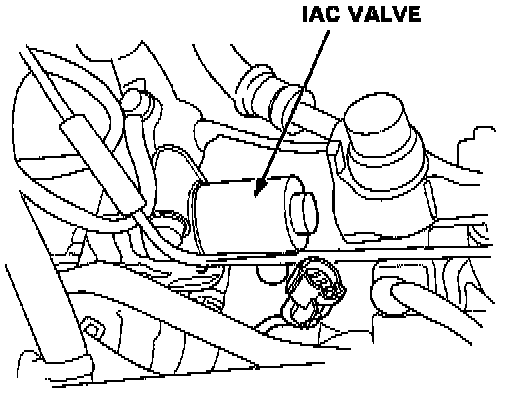
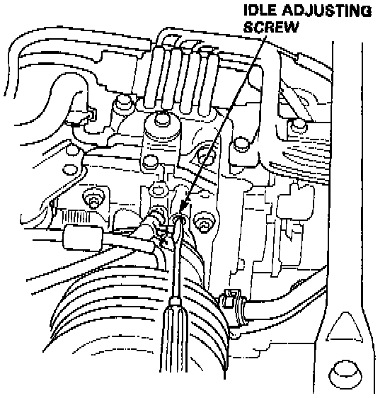

Idle Speed: Adjustments
PROCEDURENOTE: On Canada models pull the parking brake lever up. Start the engine, then check that the head lights are off.
1. Start the engine and warm it up to normal operating temperature (the cooling fan comes on).
2. Connect a tachometer.


- Connect a tachometer to loop of ignition control module secondary or remove the rubber cap from the tachometer connector and connect a tachometer.

3. Disconnect the 2P connector from the idle air control valve.
4. Start the engine with the accelerator pedal slightly depressed, then turn the headlights and rear defogger ON. After the malfunction indicator light comes on, stabilize the engine speed at 1000 rpm, then slowly release the pedal until the engine idles.
- If the engine stalls, turn the idle adjusting screw one turn counterclockwise and recheck.
5. Check idling with the headlights and rear defogger on.
Idle speed should be: 550 ± 50 rpm (A/T in [N] or [P] range)

- Adjust the idle speed, if necessary, by turning the idle adjusting screw.
- If the proper idle speed cannot be achieved, clean the throttle body port with carburetor cleaner.
6. Turn the ignition switch OFF.
7. Reconnect the 2P connector on the idle air control valve, then remove CLOCK fuse in the under-hood fuse/relay box for 10 seconds to reset engine control module.
8. Restart and idle the engine with no-load conditions in which the headlights, blower fan, rear defogger, cooling fan, and air conditioner are not operating for one minute, then check the idle speed.
Idle speed should be:
M/T 800 ± 50 rpm
A/T 750 ± 50 rpm (in [N] or [P] range)